Interaction1
UMLInteraction
Untitled
::
Note
::
Sequence Diagram
::
SeqD Créer une note
::
Interaction1
Description
none
Diagrams

SeqD Créer une note
Participants
Utilisateur
SI
BDD
Messages
Créer une nouvelle note (Utilisateur→SI)
Afficher le formulaire de la note (SI→Utilisateur)
Remplir la note (Utilisateur→SI)
Enregistrer la note (SI→BDD)
Confirmer l enregistrement (BDD→SI)
Afficher l accomplissement (SI→Utilisateur)
Properties
Name
Value
name
Interaction1
stereotype
null
visibility
public
isReentrant
true
Owned Elements
SeqD Créer une note